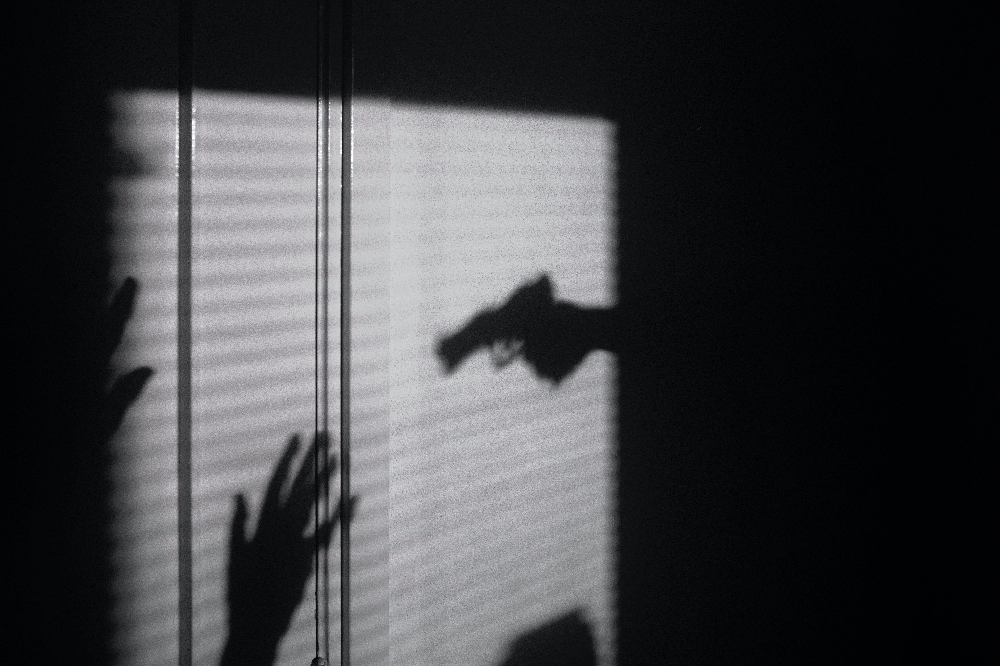

2018년 썸머 시즌의 주제는 클린한 서든어택으로 정해졌다. 업데이트 이름도 클린어택. 선승진 디렉터의 두 번째 패치이다. 7월 5일 다이어트 패치를 시작으로 시작될 예정인데 그 동안 막무가내로 집어넣던 신규 맵도 없고 초반엔 서든어택의 시그니처인 연예인 캐릭터를 통한 홍보도 없었으며 핵과 누킹 단속 강화와 호스트 서버 개선, 마지막으로 유저간의 거래 시스템이 도입될 예정이다.
대부분의 유저들은왜 이제서야 유저들 다 떠나간 마당에 이런 업데이트를 진행하냐는 푸념을 늘어놓고 있지만 간만에 제대로 된 업데이트라고 칭할 수 있다. 그러나 업데이트 전 주부터 무려 8시간이 넘는 동안 게임 오류가 생기는 바람에 유저들의 기대는 폭락하였고 랭크전에는 핵이 설쳐대고 있어 고정층 마저 이탈하고 있다. 아마도 이번 업데이트가 서든어택의 마지막 기회라고 보는 의견 이 대다수. 오버워치, 배그의 등장으로 이미 점유율은 바닥난 상태지만 고정층이 있기에 서비스가 가능했다. 그 고정층이 이번에도 나간다면 아마도 서든어택의 미래는 그리 밝지는 않아보인다.